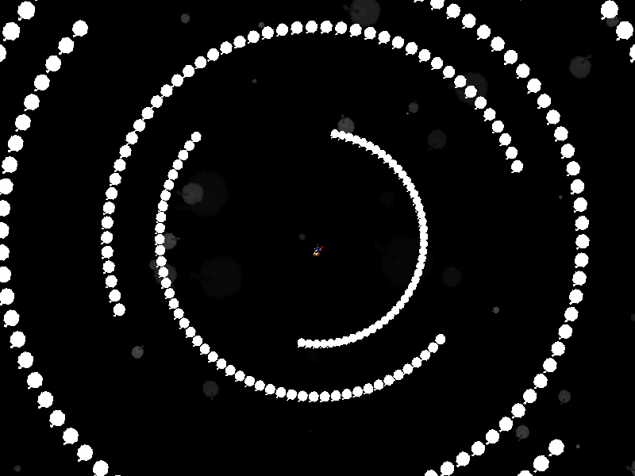
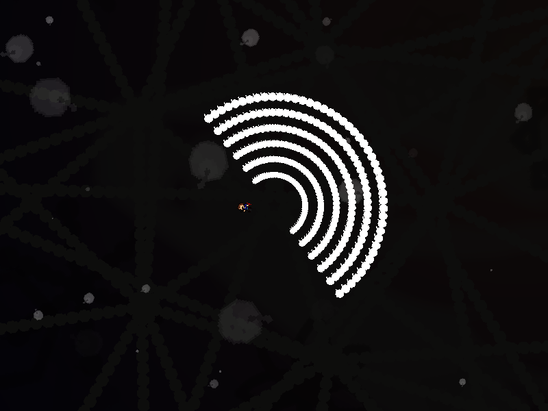

| creator | segment | label | jump |
|---|---|---|---|
| NN | 0:50.90~0:52.30 | R/Q | infinite |
角度と回転方向がランダムな弾幕です。
画面中央を中心として回転する半円状弾幕に関して、これらは画面の回転方向に対して弾幕全体の回転方向が一定である（それぞれが独立してランダムではない）ことから、0:50.90~0:51.90の任意の瞬間において0:51.90における最終的に収束する角度（fig.4-7.1）を予測することができます。
画面回転に惑わされないようにする（画面回転をないものと考える）こと、またそのために画面中央からあまり離れないことを意識することで攻略がしやすくなるかもしれません。
